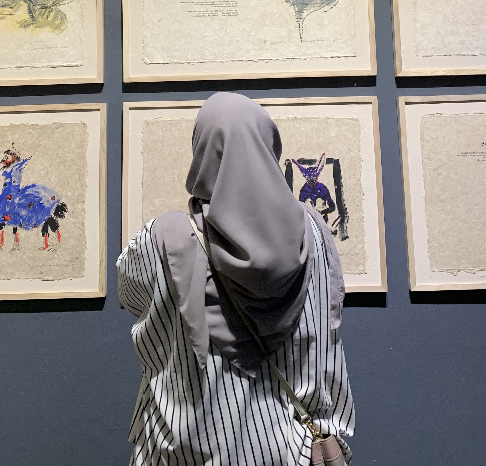

About My Event Portfolio
I have been actively involved in organizing several major events. Here are the detailed descriptions of each project:
-
Coordinator of 'Genesis' for the Department of Information Systems
As the event coordinator, I managed the team responsible for organizing the annual 'Genesis' event, an important onboarding event for new students. My role involved planning the event agenda, managing the coordination between departments, and ensuring that every aspect of the event ran smoothly. This experience sharpened my leadership skills and taught me how to handle high-pressure situations.
-
Staff of Events Division for 'Kejar Mimpi Bandung'
In this event, I contributed to organizing workshops and seminars that focused on inspiring the youth of Bandung to pursue their dreams. I was responsible for coordinating logistics, managing event materials, and liaising with guest speakers. This role enhanced my skills in detailed planning and time management.
-
Staff of Events Division for 'Switch Off Bandung'
'Switch Off Bandung' is part of a global movement to raise awareness about climate change. I was involved in the overall event preparation, especially in managing the participant registration and venue setup. Through this project, I gained valuable experience in environmental advocacy and mass-event coordination.
-
Staff of Events Division for 'Koalisi'
'Koalisi' is a collaboration event between several student organizations. My role focused on communication with external partners and ensuring that the event activities were aligned with the goals of all parties involved. This experience taught me the importance of collaboration and effective communication in a multi-stakeholder environment.